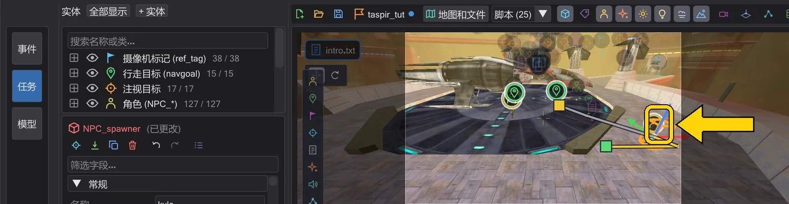
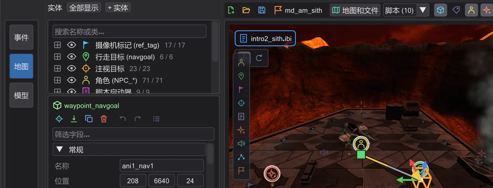
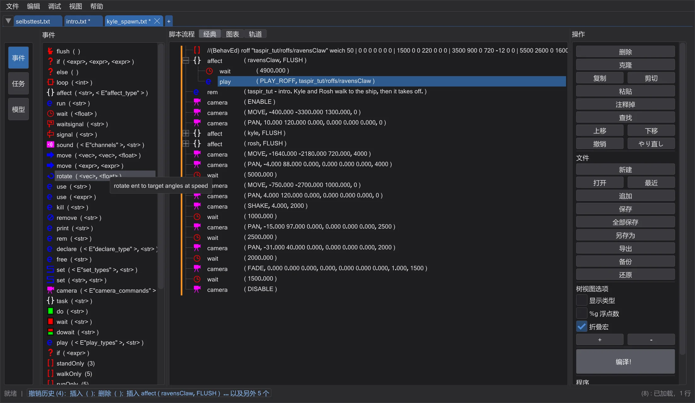
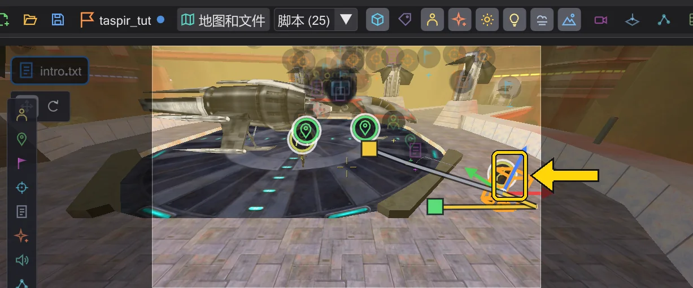
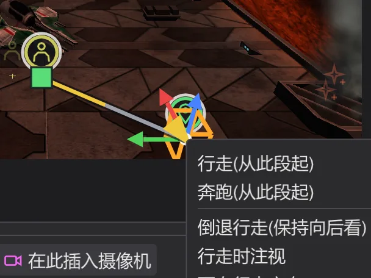
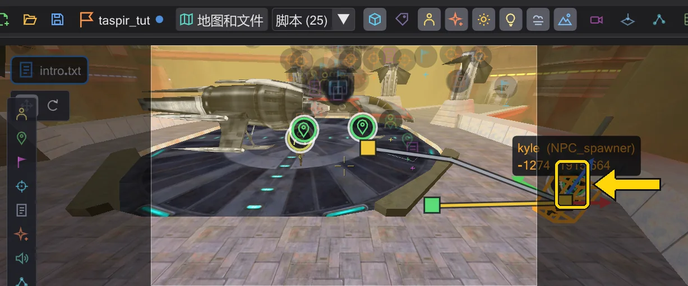

教程
让角色行走
放置一个角色和一个行走目标,让脚本把角色送过去,然后在地图上修改路径——步行或奔跑、中途增加路径点。
步骤#
- 1
放置角色。 在地图模式下单击视图左边缘的 角色 (NPC_spawner) 图块,再单击地面。在检查器中设置
NPC_type(... 按钮可搜索游戏中的所有 NPC)和 名称,例如walker。
放在地面上的角色。 - 2
放置行走目标。 单击 行走目标 (waypoint_navgoal) 图块,再单击角色要去的位置。

行走目标。 - 3
让脚本发送命令。 在实体列表中右键单击角色 → 插入 affect 块:会出现一个
affect ( "walker", FLUSH )块。在列表中右键单击行走目标 → 作为行走目标插入 (SET_NAVGOAL):该行出现在所选行下方——把它拖进 affect 块。脚本现在是affect ( "walker", FLUSH ) { set ( SET_NAVGOAL, "..." ); }。
带导航点的 affect 块。 - 4
播放。 按地图下方的播放按钮(▶):角色开始行走,身后的路径变成黄色。时间轴中它所在的行以条带显示这段行走。

行进中的角色。 - 5
改为奔跑。 右键单击路径的终点控制柄 → 奔跑(从此段起)。
SET_RUNNING会写在导航点之前,角色会更早到达。
行走目标的菜单。 - 6
中途增加路径点。 把时间轴移到行走途中,抓住角色拖向一侧:会在该时刻创建新的导航点,角色会先走到那里。

行走途中新增的路径点。


关于路径、朝向和倒退行走的更多内容:角色与路径。